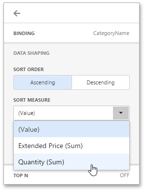

Sorting
The Web Dashboard allows you to easily change the sort order of values within a dashboard item. You can also enable sorting by measure values.
Changing Sort Order
To change the sort order of dimension values displayed within a dashboard item, open the dashboard item Bindings menu, select a data item and go to the Data Shaping section. Here you can select the Ascending or Descending sort order.

Sorting by Measure Values
The Web Dashboard also allows you to sort dimension values by summary values calculated for a specific measure. To do this, in the drop-down Sort Measure list, select a measure by which you want to sort this data item.
